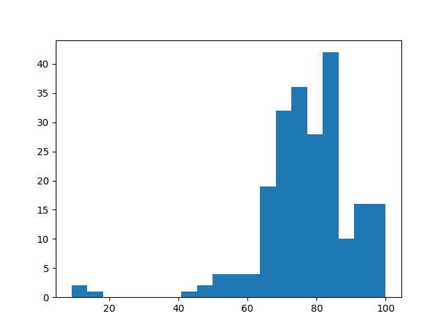

Individual Coursework Feedback
2025-01-13
Thanks all for your efforts in doing the individual coursework!
You can find the solution here.
The performance was really good, below are some summary statistics of your
marks:
- mean: 77.55
- standard deviation: 13.6
- min: 2.00
- 25th percentile: 71.00
- 50th percentile: 78.00
- 75th percentile: 85.00
- max: 100.00
Here is a plot of the distribution of the marks:

Here is a detailed summary of the various things I checked for for each question
as well as the percentage of students who were correct:
- Q1a correct value: 96.31 %
- Q1 a use st correlation: 99.08 %
- Q1b correct value: 96.31 %
- Q1 b use st correlation: 99.08 %
- Q1 c correct value: 96.31 %
- Q1 c use st correlation: 99.08 %
- Q1 d correct value: 96.31 %
- Q1 d use st correlation: 99.08 %
- Q1 e correct value: 96.31 %
- Q1 e use st correlation: 99.08 %
- Q2 a use integrate: 96.77 %
- Q2 a correct value: 77.42 %
- Q2 a correct derivative: 83.87 %
- Q2 b use integrate: 97.24 %
- Q2 b correct value: 77.88 %
- Q2 b correct derivative: 83.87 %
- Q3 a correct approach: 82.49 %
- Q3 a correct answer: 41.94 %
- Q3 b correct approach: 80.65 %
- Q3 b correct answer: 100.00 %
- Q4 a create equations: 96.77 %
- Q4 a use dsolve: 90.78 %
- Q4 a correct solution to system of differential equations: 35.02 %
- Q4 b correct use of ics: 94.01 %
- Q4 b correct solution to system of differential equations: 9.68 %
- Q4 c correct value of t: 5.99 %
- Q4 c correct value of winner: 37.33 %
Overall performance was good and the main area of difficulty was question 4. A
number of students did not use exact numbers for the constants
which implied that the equations were not exact solutions to the differential
equation. This question was marked generously and a lot of partial credit
given.
A less common mistake but one that happened more than once in question 3 was to
compute permutations instead of combinations.